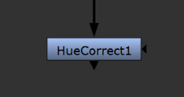
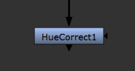
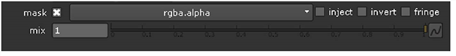

input connector.
input connector.
The mask controls in a node’s properties panel let you select a single channel for use as a matte in a given process (typically, a color correction). The given process thereafter is limited to the non-black areas of the selected channel.
You can use one of the script’s existing channels as the matte, or attach a mask to the node with a mask input connector.
You can find mask input connectors on color correction and filter nodes, such as HueCorrect and Blur. At first, they appear as triangles on the right side of the nodes, but when you drag them, they turn into arrows labeled mask. You connect them the same way as any other connectors. If you cannot see a mask input connector, open the node’s properties panel and make sure mask is set to none.
|
 |
|
| Before dragging the mask input connector. |
When dragging the mask input connector. |
| 1. | Connect a mask to the node with its mask input connector. |

If you cannot see the mask input connector, open the node’s controls and make sure mask is set to none.

By default, when a mask input is connected, the node uses the alpha channel from it as a matte.

| 2. | If you don’t want to use the alpha channel as the matte, select the channel you want to use from the mask dropdown menu. |
| 3. | If you want the mask from the mask input copied into the predefined mask.a channel, check inject. This way, you can use the last mask input again downstream. You can also set a stream of nodes to use mask.a as the mask, and then change the masking of all of them by simply connecting a new mask into the mask input connector of the first node. |
| 4. | If necessary, check the invert box to reverse the mask. |
TIP: The invert control also affects any injected masks from upstream nodes.
| 5. | If the overall effect of the node is too harsh, you can blend back in some of the input image by adjusting the mix slider. |
| 1. | Make sure nothing is connected to the node’s mask input connector. If you disconnect a mask input, the mask input connector disappears, as it is no longer being used. |
| 2. | Select the channel you want to use from the mask dropdown menu. |
| 3. | If necessary, check the invert box to reverse the mask. |
| 4. | If the overall effect of the node is too harsh, you can blend back in some of the input image by adjusting the mix slider. |
|
|